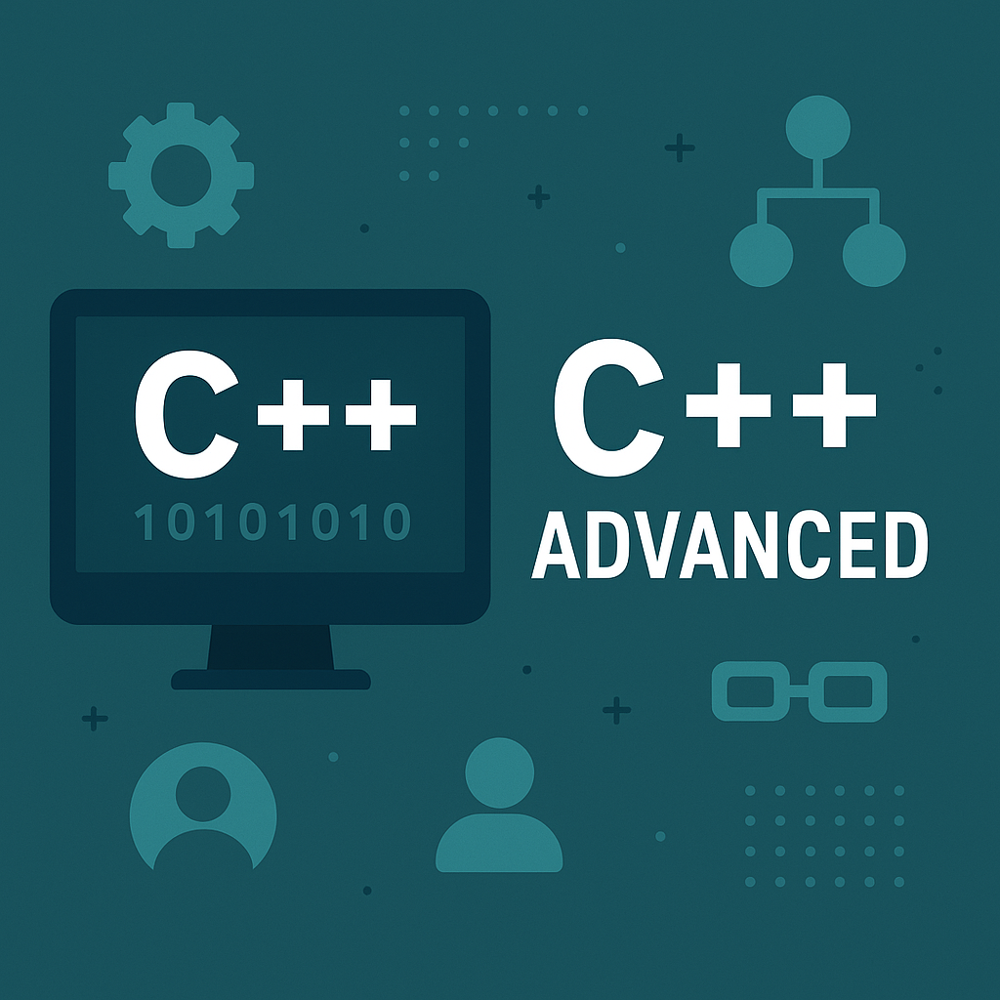

Introduction to Advanced C++
Dive deeper into modern C++ features beyond the basics. Explore templates, smart pointers, concurrency, and compile-time programming to write more expressive, efficient, and safe code.
Dive deeper into modern C++ features beyond the basics. Explore templates, smart pointers, concurrency, and compile-time programming to write more expressive, efficient, and safe code.
std::enable_if, static_assert, variadic templates.std::unique_ptr, std::shared_ptr, and std::weak_ptr.std::thread and std::async.std::mutex, std::lock_guard, and std::condition_variable.std::move) and rvalue references.auto type deduction.if constexpr.constexpr for compile-time computations.Mastering these advanced C++ techniques—templates, smart pointers, concurrency, and modern language features—will help you build high-performance, maintainable applications.